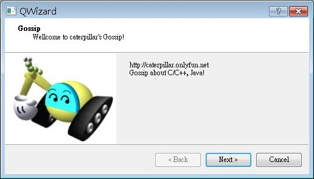
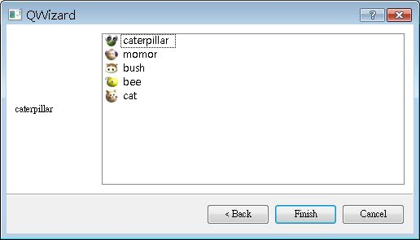

在應用程式安裝或是使用者註冊、設定時，可以提供使用者「精靈」（Wizard）進行一些選項設定與資訊填寫，在Step by Step的過程中，提示使用者完成所有必要的選項設定或資訊填寫，精靈可以使用QWizard類別來提供這個功能。
QWizard中每一步的畫面，都是一個QWizardPage物件，一個QWizardPage可以進行元件置放、設定版面管理、設定浮水印圖片、LOGO圖片、標題、副標題等。
下面這個程式是個簡單的示範，程式中將用QWizard建立有兩個頁面步驟的精靈：
#include <QApplication>
#include <QLabel>
#include <QWizard>
#include <QWizardPage>
#include <QHBoxLayout>
#include <QListWidget>
QWizardPage *createWelcomePage() {
QWizardPage *page = new QWizardPage;
page->setTitle("Gossip");
page->setSubTitle("Wellcome to caterpillar's Gossip!");
page->setPixmap(QWizard::WatermarkPixmap, QPixmap("caterpillar.jpg"));
QHBoxLayout *layout = new QHBoxLayout;
layout->addWidget(
new QLabel("http://caterpillar.onlyfun.net<br>Gossip about C/C++, Java!"));
page->setLayout(layout);
return page;
}
QWizardPage *createListPage() {
QWizardPage *page = new QWizardPage;
QLabel *label = new QLabel;
label->setFixedWidth (100);
QListWidget *listWidget = new QListWidget;
listWidget->insertItem(0, new QListWidgetItem(
QIcon("caterpillar_head.jpg"), "caterpillar"));
listWidget->insertItem(1, new QListWidgetItem(
QIcon("momor_head.jpg"), "momor"));
listWidget->insertItem(2, new QListWidgetItem(
QIcon("bush_head.jpg"), "bush"));
listWidget->insertItem(3, new QListWidgetItem(
QIcon("bee_head.jpg"), "bee"));
listWidget->insertItem(4, new QListWidgetItem(
QIcon("cat_head.jpg"), "cat"));
QObject::connect(listWidget, SIGNAL(currentTextChanged (const QString &)),
label, SLOT(setText(const QString &)));
QHBoxLayout *layout = new QHBoxLayout;
layout->addWidget(label);
layout->addWidget(listWidget);
page->setLayout(layout);
return page;
}
int main(int argc, char *argv[]) {
QApplication app(argc, argv);
QWizard *wizard = new QWizard;
wizard->setWindowTitle("QWizard");
wizard->addPage(createWelcomePage());
wizard->addPage(createListPage());
wizard->show();
return app.exec();
}QWizardPage的setTitle()與setSubTitle()分別用來設定標題與副標題，而setPixmap ()用來設定顯示在畫面中的圖片，圖片的顯示方式有浮水印（WatermarkPixmap）、LOGO（LogoPixmap）、橫副 （BannerPixmap）、背景（BackgroundPixmap）等方式，在精靈頁面中的顯示的位置各不相同，可以參考Qt線上文件中 QWizard的說明。
程式中的精靈有兩個頁面，在過程中可以按「Next」進入下一個頁面，如果是最後一個頁面，則會顯示「Finish」按鈕，下圖是執行的的參考畫面：

